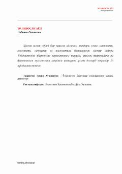

ELQishloq ayolining matonati va hayotiy sinovlariga bag'ishlangan ta'sirli qissa.
Asar Husniya ismli oddiy qishloq ayolining hayotiy qiyinchiliklar, matonat va sadoqatga to'la taqdirini hikoya qiladi. Kitobda O'zbekistondagi fermerlik harakati tarixi, qishloq taraqqiyoti va oilaviy qadriyatlar masalalari badiiy tilda yoritilgan.